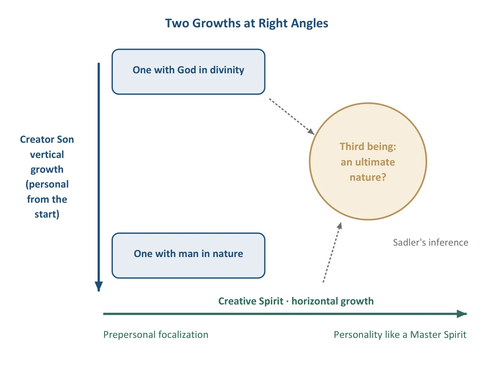

La croissance des Fils et Esprits d’Univers
Original : Annexe XIII, L’évolution des Fils et Esprits d’Univers (pp. 340–347)
DANS CE CHAPITRE
Les deux créateurs d’un univers local, le Fils Créateur et l’Esprit Créatif, sont des êtres qui croissent par l’expérience. Sadler rassemble ce que le texte dit de leur nature et de leur nombre, puis formule une hypothèse : trois sortes de Fils et d’Esprits d’Univers serviront sur le niveau d’espace primaire. Ce sont les Trios Créatifs, qui ont parachevé un univers local et trinitisé un troisième être ; les Fils et Esprits d’Âge Mixte, nés maintenant mais destinés à devenir créateurs dans l’âge suivant ; et les Fils et Esprits du Troisième Âge, qui naitront dans cet âge suivant.
1. La nature des deux créateurs (orig., pp. 340–341)
Lorsque le Père et le Fils explorent les effets de leur union sur des niveaux inférieurs à l’infini, l’ordre des Micaëls, les Fils Créateurs, voit le jour. Le texte dit qu’en pouvoir créateur ils sont « potentiellement égaux à Dieu le Père et à Dieu le Fils » [7:6.3]. Leur fonction présente est finie, mais ils pourraient détenir des capacités superfinies cachées. Le passage sur lequel Sadler fonde toute cette annexe est le suivant.
Mais, à un moment donné du lointain futur, dans les univers présentement en cours de mobilisation dans l’espace extérieur, nous croyons que la liaison entre un Maitre Fils septuple et un Esprit Créatif du septième stade pourra atteindre des niveaux absonites de service accompagnés de l’apparition de nouvelles choses, significations et valeurs sur des niveaux transcendantaux de signification universelle ultime.21:6.3
Au moment où un Fils Créateur est personnalisé, le potentiel de son futur consort se différencie dans l’Esprit Infini [17:6.3]. Puisque l’Esprit Infini peut répondre sans limite, Sadler considère le potentiel de croissance d’un Esprit Créatif comme un complément de même mesure que celui de son Fils.
Les deux créateurs sont aussi liés au temps et à l’espace de façons croisées. Dans son univers local, l’Esprit Créatif est indépendant de l’espace, mais non du temps [34:3.3].
Un Fils Créateur n’est pas handicapé par le temps, mais il est conditionné par l’espace …34:3.5
Sadler raisonne que, si les deux créateurs devaient un jour réaliser une union trinitisante, l’être produit ne serait limité ni par le temps ni par l’espace, du moins dans un domaine assigné. Ce serait la condition d’un service sur le niveau absonite.
2. Combien y a-t-il de Fils Créateurs ? (orig., pp. 341–342)
Chaque fois qu’un Fils Créateur vient à l’existence, un Esprit Créatif se différencie aussi, de sorte que le nombre des Fils égale celui des Esprits.
| Étape | Contenu | Fondement |
|---|---|---|
| Donnée | Les Fils Créateurs sont « plus de sept-cent-mille » ; ailleurs « près d’un million » | 21:1.4, 118:6.2 |
| Donnée | Le plan d’organisation des univers prévoit 700 000 univers locaux | 15:2.10–14 |
| Donnée | Les Unions des Jours sont exactement 700 000, et il n’en est plus créé | 21:1.4 |
| Donnée | 700 000 Inspecteurs Associés ; 7 milliards de Sentinelles Affectées (une par système local) | 24:4.1, 24:5.1 |
| Inférence | Les sept superunivers contiennent exactement 700 000 univers locaux | Sadler |
| Conclusion | Les Micaëls au-delà de 700 000 auront leur première expérience créatrice dans l’espace extérieur | Sadler |
Mais, en ce qui concerne la destinée des Micaëls au-delà de sept-cent-mille, nous n’en avons jamais été informés.21:1.4
Le texte s’arrête juste avant la conclusion. Si un nombre considérable de Micaëls doivent bâtir leurs premiers univers dans l’espace extérieur, alors des Fils et des Esprits aux histoires très différentes y travailleront côte à côte.

3. Les Trios Créatifs Fils-Esprit (orig., pp. 342–346)
Le Micaël Maitre et l’Esprit Créatif du septième stade
Les Trios Créatifs Fils-Esprit sont les Fils Créateurs et les Esprits Créatifs qui ont parachevé les sept-cent-mille univers locaux de cet âge. Sadler les appelle « Trios » parce qu’il croit que chaque couple ajoutera, par trinitisation, un créateur coordonné de plus.
Un Micaël Maitre est un créateur qui a acquis, par l’expérience, la divinité de la suprématie évolutionnaire en plus de sa divinité paradisiaque, et qui a traversé six stades de souveraineté, de la souveraineté de vice-gérance à la souveraineté trinitaire d’un univers ancré dans la lumière et la vie. Le texte ne laisse le septième que sous le nom de « souveraineté non révélée » [21:3.11] ; Sadler conjecture que c’est le stade où le Fils délègue son autorité et part pour l’espace extérieur.
En opérant comme révélateur de la volonté de la Suprématie, Micaël, à l’instar de tous les autres Maitres Fils, s’est identifié lui-même avec le Suprême pour l’éternité.119:8.7
Sa partenaire est un Esprit Créatif parvenu à sa « carrière non révélée ». Elle passe successivement par sa différenciation initiale, une éducation préliminaire au cours de laquelle elle devient consciente de l’espace, l’organisation physique de l’univers local, la personnalisation au moment de la création de la vie, l’élévation à la cosouveraineté après les effusions, et le sixième stade dans la lumière et la vie [17:6]. Sadler se représente le septième stade comme celui où elle devient pleinement personnelle et part avec son partenaire vers l’espace extérieur.
Deux croissances à angle droit
L’intuition la plus belle de Sadler est que les deux croissances se tiennent à angle droit. Le Fils Créateur est une personne dès le commencement, et son expérience est « verticale » : il descend de l’unité avec Dieu en divinité jusqu’à l’unité avec l’homme en nature. L’Esprit Créatif commence comme une focalisation prépersonnelle de l’Esprit Infini et s’élève jusqu’à une vraie personnalité à la ressemblance d’un Maitre Esprit ; son expérience est « horizontale ». La croissance que la nature de l’un exclut est exactement celle que l’autre accomplit.

Ensemble, les deux croissances couvrent presque toute l’étendue de croissance ouverte dans l’âge présent. Sadler raisonne donc qu’un couple qui a parachevé un univers local aura la capacité d’exprimer, par la trinitisation, même cette plénitude expérientielle.
Création et trinitisation
Tôt dans l’histoire d’un univers local, le Fils et l’Esprit produisent une Radieuse Étoile du Matin, Gabriel. C’est un acte créateur complet, unique dans chaque univers local, mais ce n’est pas une union trinitisante. À cette époque, le Fils n’avait pas encore fait ses effusions et l’Esprit se trouvait dans son quatrième stade, si bien que Gabriel n’exprime que les capacités que possédaient alors les deux créateurs. Le texte dit d’ailleurs qu’il est « considérablement limité en attributs de Déité » [33:4.2]. La trinitisation est une autre affaire. Le Père et le Fils ne pouvaient produire qu’une seule Déité égale à eux-mêmes, l’Acteur Conjoint, et par cet acte les deux furent joints en tant que Père-Fils [22:7.3]. Sadler soutient que, si un Micaël Maitre et un Esprit du septième stade s’unissent de cette manière, un descendant coordonné apparaitra et les deux deviendront un « Fils-Esprit ».
Le troisième être
Certains soutiennent que les âges futurs verront une forme d’union plus étroite entre les Fils Créateurs et les Divines Ministres associés ; il est même possible que cette union créatrice s’extériorise en une nouvelle expression d’identité associée-créatrice de nature ultime.56:7.7
De même que l’Esprit Infini est la « conséquence surajoutée » de l’union du Père et du Fils [10:2.5], le troisième être sera probablement plus que la somme des attributs de ses parents. Parce qu’il exprime à la fois la croissance horizontale et la croissance verticale, explique Sadler, il pourrait revêtir une nature ultime. Chaque Esprit Créatif ressemble au Maitre Esprit de son superunivers [34:1.3], de sorte que les Trios aussi se répartiront en sept ordres de 100 000 chacun. Cela conduit à l’annexe XIV.
4. Les Fils et Esprits d’Âge Mixte et du Troisième Âge (orig., pp. 346–347)
Les Micaëls d’Âge Mixte existent maintenant et continuent d’être créés. Havona est leur terrain d’éducation [14:6.27], et, sur sept mondes du quatrième circuit, le corps de réserve des Micaëls du Paradis tient des écoles pour les pèlerins [26:8.1]. Sadler croit que, durant cette formation, ils prennent personnellement part à la croissance du Suprême, non encore comme créateurs, mais comme êtres pré-créateurs. Les Esprits Créatifs d’Âge Mixte, n’ayant aucun univers local assigné, restent au deuxième stade ; ils deviennent conscients de l’espace et reçoivent une éducation préliminaire, mais leur participation est prépersonnelle [17:6.4].
Leur activité créatrice aura lieu sur le niveau d’espace primaire après la clôture de l’âge présent. Les potentiels avec lesquels ils y travailleront sont eux-mêmes post-suprêmes, de sorte que tout ce qu’ils acquerront comme créateurs portera également un caractère post-suprême. Les Fils et Esprits du Troisième Âge seront des êtres entièrement post-suprêmes, nés et créativement actifs dans l’âge suivant. La divinité paradisiaque qu’ils recevront sera la même que celle de leurs prédécesseurs, et leur expérience créatrice suivra une voie parallèle à celle que traverse le groupe d’Âge Mixte.
Ce qui distingue les trois groupes
Deux questions séparent les trois groupes : quand sont-ils nés, et quand servent-ils pour la première fois comme créateurs ? Seuls les Trios Créatifs ont pris part à la croissance du Suprême en tant que créateurs ; le groupe d’Âge Mixte n’y a pris part que comme êtres pré-créateurs ; le groupe du Troisième Âge apparait une fois cette croissance achevée. Le texte va jusqu’au fait qu’il y a plus de 700 000 Micaëls et jusqu’à la croyance que l’union du Fils et de l’Esprit pourra atteindre des niveaux absonites. La division en trois groupes est l’hypothèse de Sadler.
Points clés
- Le Fils Créateur possède potentiellement des capacités superfinies, et l’Esprit Créatif est un complément doté d’un potentiel de croissance de même mesure.
- Le Fils Créateur est relativement libre du temps, l’Esprit Créatif de l’espace ; Sadler s’attend à ce que l’être né de leur union les dépasse tous deux.
- Les Fils Créateurs sont plus de 700 000, alors que les univers locaux sont exactement 700 000 ; les Micaëls restants bâtiront donc leurs premiers univers dans l’espace extérieur.
- La croissance verticale du Fils et la croissance horizontale de l’Esprit se complètent à angle droit et pourraient trouver leur expression, comme nature ultime, dans un troisième être trinitisé (21:6.3, 56:7.7).
- Les trois groupes, Trios Créatifs, Âge Mixte et Troisième Âge, sont l’hypothèse de Sadler ; ils se distinguent par l’âge de leur naissance et par l’âge où ils servent pour la première fois comme créateurs.